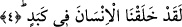

çocuğu -ki o Meryem’dir- doğurduğunu daha iyi bilir, demektir.
Ya da âyette geçen “baba” Âdem (a.s.), “ondan meydana gelen çocuk” ise onun
zürriyyetidir. Bu tefsir sonraki âyette gelecek cevabın içeriğine daha uygundur.
“nekra” kelimesinden anlaşılan ululamada mutlaka tağlîbi dikkate almak gerekir. Yâni
o bütünün bir kısmın vasfıyla tavsif edilmesi ya da herkesin ortak olduğu konuşma,
açıklama, eşsiz bir sûret ve diğerleri gibi bir hususa şaşma türündendir.
“Baba”nın Hz. Peygamber (a.s.), “çocuk”un ise O’nun rahmete nâil olmuş ümmeti
olduğu da söylenmiştir. Çünkü Hz. Peygamber (a.s.): “Ben sizin için ancak baba
mesâbesindeyim, size dininize âid hususları öğretirim.”[100] buyurmuştur. Hz. Ali’ye
ise “Ben ve sen bu ümmetin babalarıyız.” demiştir. Hz. Peygamber (a.s.) şu sözü ile bu
hususa işâret etmiştir: “Kıyâmet günü her sebeb ve neseb bağı kopacaktır. Sadece
benim sebebim ve benim nesebim kalacaktır.”[101] Onun sebebi din sebebi, nesebi ise
takvâ nesebidir. Allah Teâlâ Hz. Peygamber (a.s.)’ı mü’minlerin babası olarak
isimlendirerek şöyle buyurmuştur: “Peygamber, mü’minlere kendi canlarından daha
yakındır. Eşleri onların analarıdır.” (el-Ahzâb, 33/6) Bazı kırâatlarda bu âyetin
devamında “O da onların babasıdır.” şeklinde bir ilave vardır. Çünkü Peygamber
(s.a.)’in temiz eşleri mü’minlerin anneleri olmaları O’nun da mü’minlerin babası
olmasını gerektirir. Çünkü herhangi bir şeyin ortaya çıkmasına, ıslah olmasına, zuhûr
etmesine sebep olan kimseye “baba” denir. Hz. Peygamber (a.s.): “Ben Allah’tanım,
mü’minler ise benim nûrumun feyzindendirler.” buyurmuştur. Allah Teâlâ: “İşte
böylece sizin insanlığa şâhidler olmanız, resulün de size şâhid olması için sizi
mutedil bir millet kıldık.” (el-Bakara, 2/143) buyurarak bu ümmetin fazîletini
açıklamaktadır. Bundan dolayı Allah Teâlâ bu ümmet üzerine yemin ederek onları
yüceltmiştir.
Âyette baba olan ruh İbrahim’ine, ondan meydana gelen sır İsmâil’ine veya ruh
Âdem’ine ve sır İbrâhim’ine işâret vardır. Yine Îsâ (a.s.)’ın “Ben babama ve sizin
semavi babanıza gidiyorum.” ve“Semavi babanıza benzeyiniz.” sözünde olduğu üzere
insânî nefislerin hakîkî babası olan rûhu’l-kudse işâret vardır. Şu halde “ondan
meydana gelen çocuk”tan maksad onun meydana getirdiği nefistir. Burada sanki şöyle
denilmiş olmaktadır: Rûhu’l-kuds ve nefs-i nâtıkaya yemin ederim.
4. Biz, insanı (yüzyüze geleceği nice) zorluklar içinde yarattık.
Bu ifâde yukarda yapılan yeminin cevabıdır.
Bir kimsenin ciğeri ağrıyıp şiştiği zaman “kebed” denir. Daha sonra kelimenin
kullanımı genişlemiş ve her türlü yorgunluk ve meşakkati ifâde etmek için kullanılmıştır.
Sıkıntıya göğüs germek mânâsına olan “mükâbede” kelimesi de buradan türemiştir.